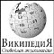

BASIS
ВАЛЮТА United Kingdom (1817) 1 = 7,32ВАЛЮТА Россійская Имперія (1819) 5 = 5,997
ВАЛЮТА Россійская Имперія (1898) 10 = 7,74
ВАЛЮТА United States of America (1944) 35 = 31,1
СЕЛЬСКОЕ ХОЗЯЙСТВО
ГОРНОЕ ДЕЛО
ДЕМОГРАФИЯ
SNA
ÜBER
FB R 14/8F.п.IV.2
UDHR
Конституция РФ
N 230-ФЗ 18.12.2006
N 152-ФЗ 27.07.2006
N 374-ФЗ 06.07.2016
N 375-ФЗ 06.07.2016
N 90-ФЗ 01.05.2019
ПП РФ 27.10.2025 № 1667
XXXXXXXXXX
XXXXXXXXXX


